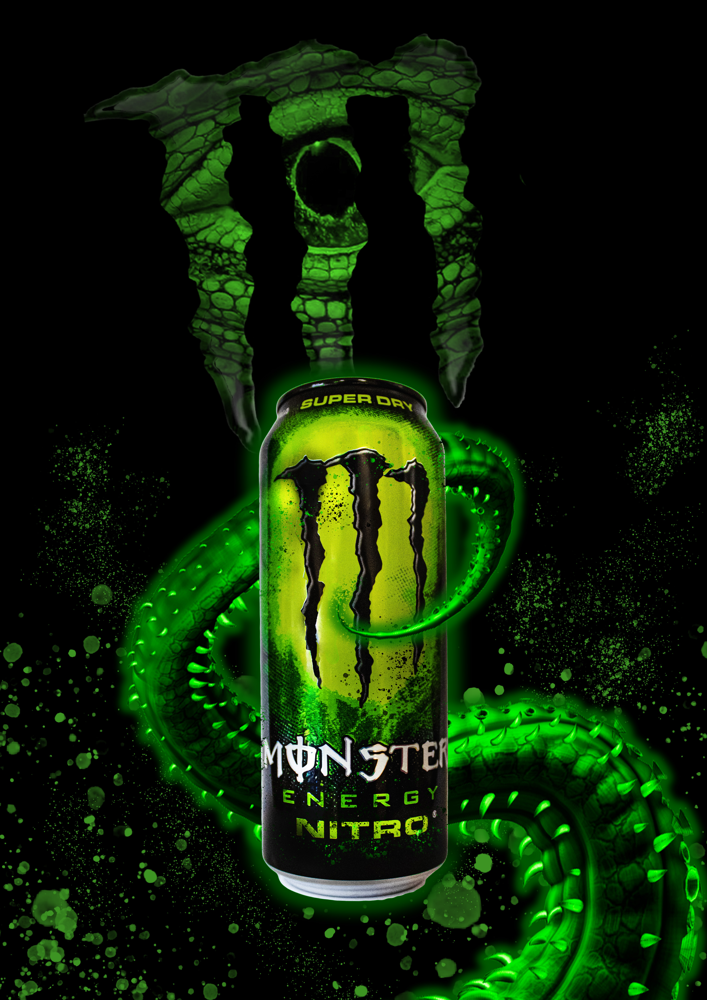

PROJECT:
MONSTER
Location: Unknown // 2024
"FEEL THE BEAST WITH EVERY SIP."
Questo poster pubblicitario della Monster è stato ideato, disegnato e prodotto da me. Ho curato personalmente tutte le fasi della produzione, documentandomi sulle sensazioni che questo brand trasmette e la ricerca dei vari elementi. La produzione è stata fatta utilizzando Adobe Lightroom e Photoshop.
SYSTEM SPECS:
- > FORMAT: 9:16 VERTICAL OPS
- > EDITING: ADOBE PREMIERE PRO